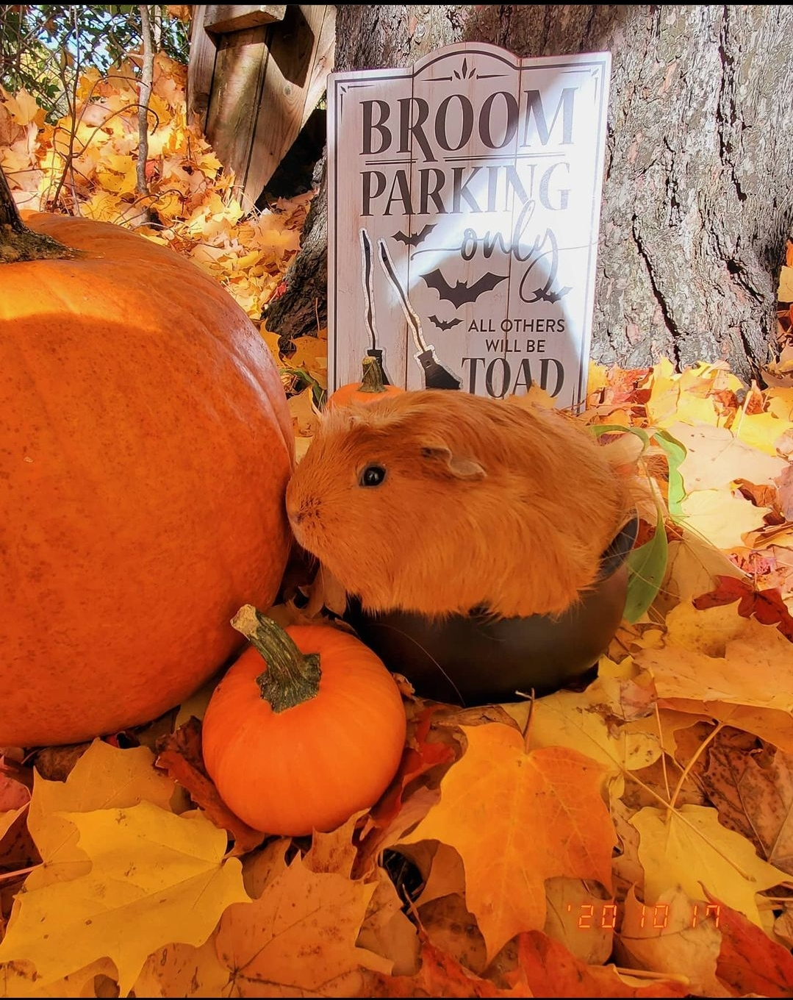

Little Dew Drop Studios provides the authentic expression of art for your business decoration, for any setting, and any work environment with a variety of personalized original photography or hand made crafts and arts.
Picture of a luscious green moss formation on the base of the Eidelweiss Alps in Bavaria, Germany.
A lone hovel likeness mushroom on the outskirts of the great lakes in upstate New York.
A beautiful sun setting break through the fall seasoned trees in Bavaria, Germany.
Perfect contrast of the blue sky and the tree line during a mild summer in Vilseck, Germany.
A lovely stroll along the busy streets of Paris, France
Vintage style snapshot of the scenic view of the Eiffel Tower across the River Seine.
Castle Gardens view of the Boldt Castle located in the beautiful thousand islands of New York.

Bottom top view of one among numerous ceiling art inside the Louvre Museum in Paris, France.

Beautiful fall photo with a vintage style.
Vintage style photo to capture model accurate expression.
Black and White style photograpy.
Black and White style photography #2.
Guinea Pig named Delbert takes his Fall Halloween Photo.
Guinea Pig named Pumpkin takes his Fall Halloween Photo. 
Guinea Pig named Nilla takes his Fall Halloween Photo.
Guinea Pig named Winnie takes his Fall Halloween Photo.
About Me